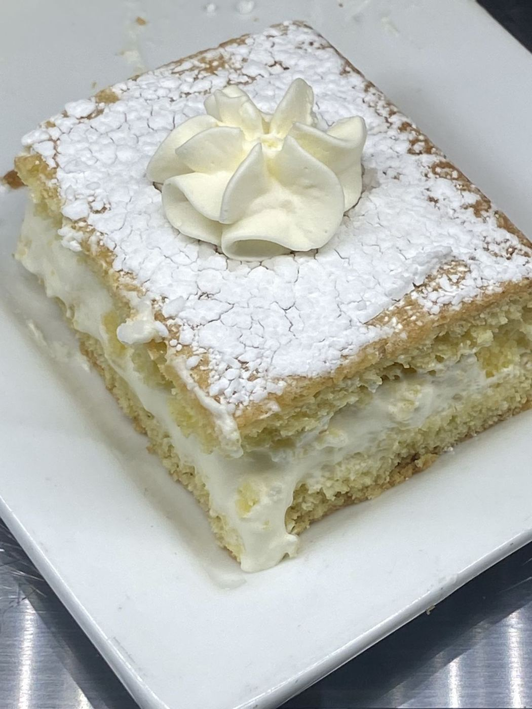

A homey little bakery, baked fresh daily
Cakes, pastries, vegan bakes and coffee in the heart of Whitehall, OH. 5.0★ from 21 Google reviews.
Call the cafeToday’s board
On the board
Celebration cakesCustom layered cakes for birthdays and showers.
Almond & cinnamon cakeCustomer favorites, freshly baked.
Vegan optionsCakes you can’t tell are vegan.
Cream puffs & pastriesNapoleons, cream puffs and lemon loaf.
Coffee barCappuccino with alternative milks.
Guests say
“The almond cake is absolutely delicious, and the atmosphere is so homey and quaint. The owner is incredibly friendly and welcoming to everyone who walks in.”
This is the cutest little bakery at the heart of Whitehall. They had the best coffee, They also had alternative milks as well as vegan options for their bakery items! I loveddd it. The cakes did not even taste vegan! :)
I love this bakery; it gives me a comforting, homey vibe. The cinnamon cake and lemon loaf paired with cappuccino are my favorites—so light, clearly freshly baked everyday. Highly recommend checking it out!